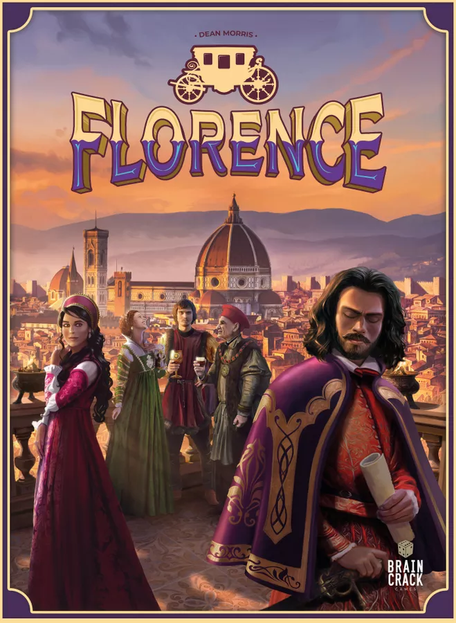
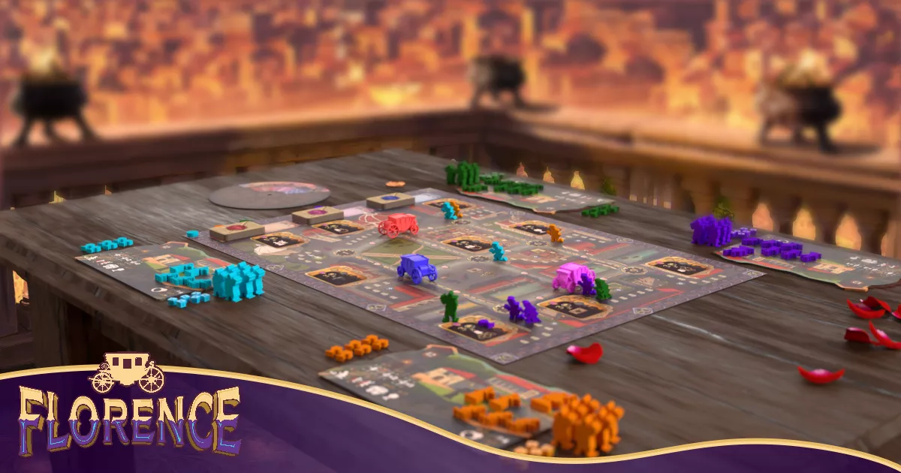
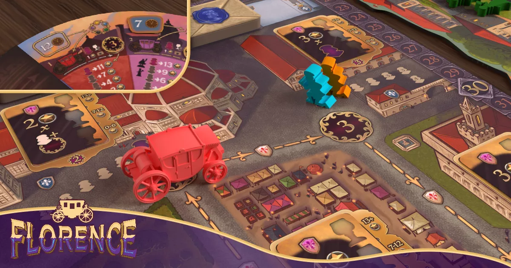
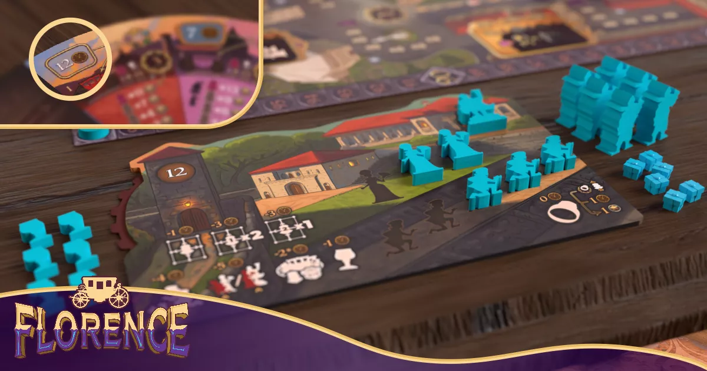
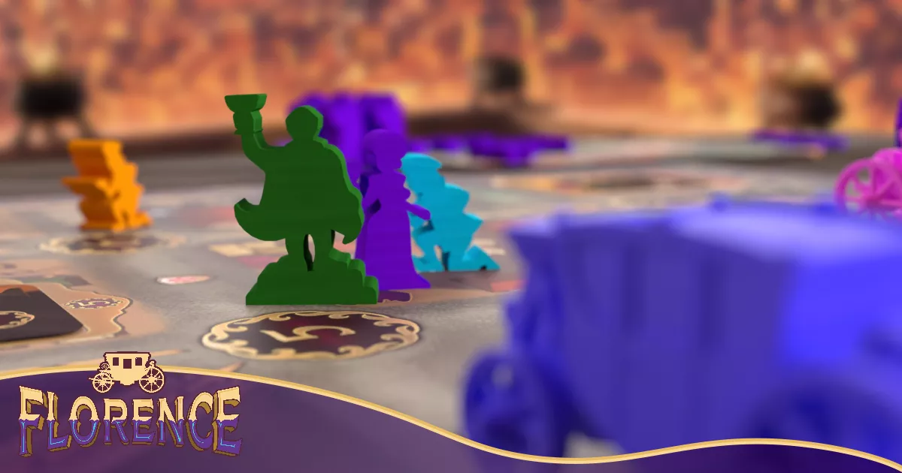
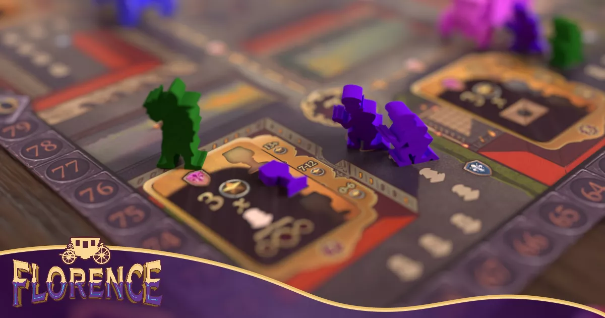
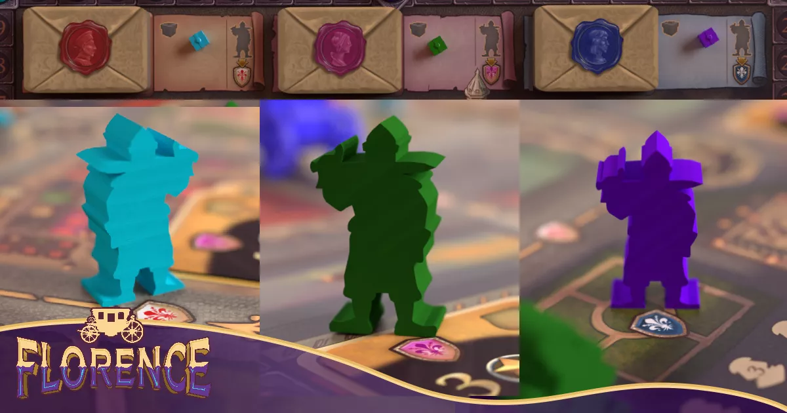

Woo the Medici in a Euro-style area control game set in Renaissance-era Florence.
Set in the titular city, Florence tasks players with elevating the status of their family and navigating the city on the night of a grand Carnevale to set up meetings with the ruling Medici figureheads: Cosimo, Giovanni, and Contessina.
Florence is a Euro-style area control game in which the regions you want to hold change each round as the Medici move around the city attending various functions. Over nine rounds, each player dispatches family members to attend parties, give gifts, brag about their achievements, engage in spurious gossip, and muscle their way through crowds to get some valuable face-time with the Medici. The chief resource in Florence is time: As the Carnevale moves into full swing and the streets fill with revelers, they will become harder to navigate, and you will need to be cautious of which actions you ask your various scions to complete. But by ensuring that your family is at the front of each queue and the most talked about (by meeting conditions of various "brag" cards), you gain valuable points to elevate your family's status. Each Medici is impressed only by a specific approach, and as the night goes on, they become harder to impress — which scores you more points for increasingly harder objectives should you do so.




